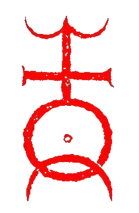
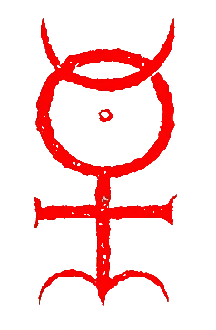
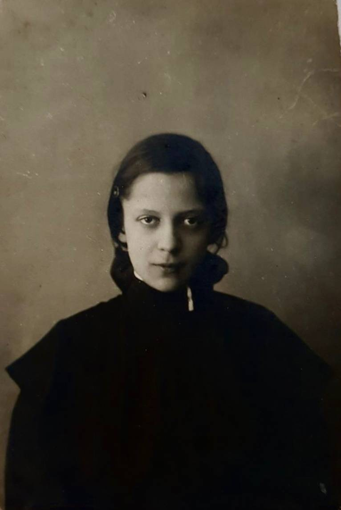
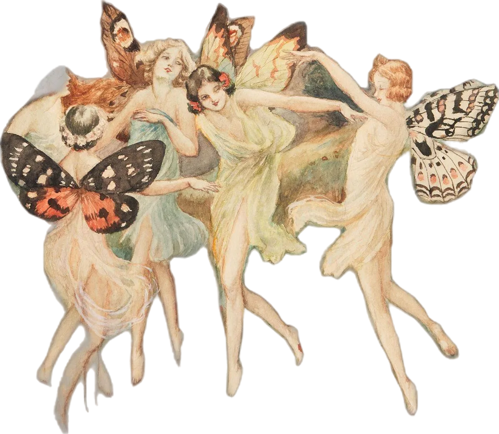

|
Храм памяти моей валькирии  Эссе Le Soleil de Minuit  ==ТОТ, КТО ИДЕТ ПРОТИВ ДНЯ, НЕ ДОЛЖЕН БОЯТЬСЯ НОЧИ== | |||||||||||
| Главная | Видео | Фото | Картины | Эссе | Аудио | |||||||||||
|
 ---- odin
[ ◄ Къ оглавленiю эссе ] [ Главная ] |
|||||||||||